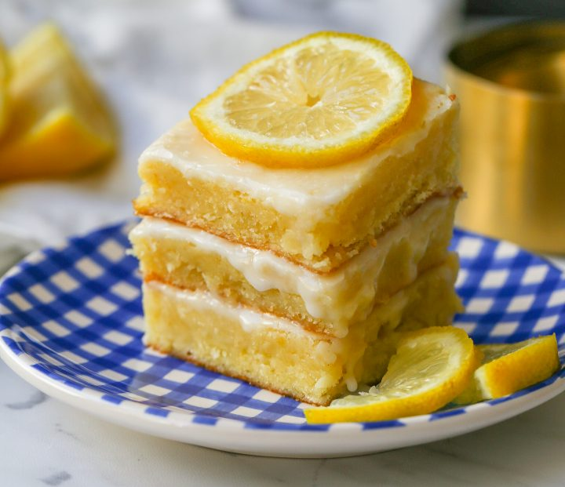

Lemon Brownies

Fudgy Lemon Brownie Bars
These Fudgy Lemon Brownie Bars have the perfect balance of fresh lemon flavor paired with butter for richness and just the right amount of sweetness to balance out the tanginess from the lemon juice and zest. If you love lemon, you may have just found your new favorite lemon bar!
These are basically a chewy lemon blondie bar made with butter, sugar, eggs, lemon juice, lemon zest, flour, salt and baked and topped with a sweet lemon glaze made with powdered sugar and lemon juice. I suggest using fresh lemons to make this recipe since lemons are the star ingredient!
Ingredients
- 1 lb. Fettuccine Alfredo (I prefer to use fresh, refrigerated fettuccine pasta)
- ¾ cup (1 ½ sticks) Butter (softened)
- 1 ¼ cups Sugar
- 2 large Eggs
- Zest from 1 large Lemon
- ¼ cup Lemon Juice
- ½ to 1 teaspoon Lemon Extract (optional)
- 1 ⅓ cups Flour
- ½ teaspoon Salt
- 1 cup Powdered Sugar
- 2 Tablespoons Lemon Juice
Steps
- Preheat oven to 350 degrees. Lightly spray a 8 x 8 pan with non-stick cooking spray or line the pan with parchment paper (it makes it easier to cut the lemon brownies).
- In a large bowl, cream the butter and sugars, until light and fluffy, about 3-4 minutes, scraping the sides of the bowl often. Add in eggs one at a time, mixing after each addition.
- Add lemon zest and lemon juice and mix until mixed together.
- Fold in flour and salt. Stir together. Pour into prepared pan and bake for 20-25 minutes or until toothpick comes out clean (meaning there's no runny batter). Let cool.
- In a small bowl, whisk together powdered sugar and lemon juice. I suggest using a whisk to achieve the smoothest glaze.
- Once the lemon brownies have slightly cooled, pour on glaze. Let the glaze set up before cutting into squares.